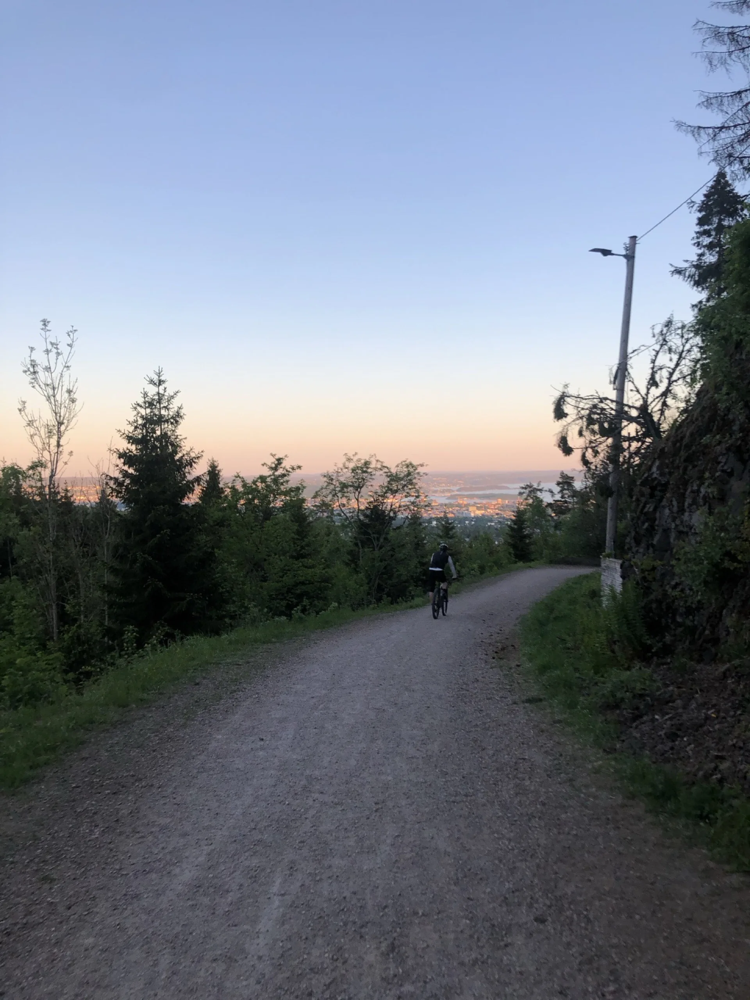

Is it a good day to ride? Today and the next five days in the forest above Oslo
Loading today's forecast…
Sunset minus each route's riding time, stops included. Bikes can be collected from 10:00.
Forecast data from MET Norway, licensed under CC BY 4.0, for a point in the forest near Ullevålseter. Updated every three hours.
Each day is scored for the hours you can actually ride: from 10:00, when bikes can be collected, until sunset.
The forecast is for the Nordmarka itself, at around 280 metres, not for central Oslo. Up there it is usually a few degrees colder than the city, and on cold, wet days the difference between rain in town and something wintrier in the trees matters. If you are deciding whether to ride, this is the forecast that counts.
In autumn, daylight runs out before your legs do. The start times above work back from sunset, so you finish the loop in the light. Every rental includes front and rear lights in case the ride runs long. For route details, see the Ring 4 guide or a spare day in Oslo by bike.
Yes. The forest roads are well-drained gravel that stays firm in rain, so a wet day is rideable, just wetter. Bring a shell jacket and allow more braking distance.
Usually when the first lasting snow arrives, often in November. Until then autumn is one of the best times to ride: quiet roads, autumn colours and firm gravel.
Ring 4 takes about five hours with stops. Start no later than five hours before sunset; the start-time table on this page shows the exact time for today and the next days.
Usually a few degrees colder. The forecast on this page is for the forest itself at around 280 metres, near Ullevålseter, not for the city.
Oslo Bike Tours rents gravel bikes and e-bikes from four free pickup points on the metro and tram, with helmet and lights included.
Gravel bikes and e-bikes from four free pickup points on the metro and tram, with helmet and lights included.
Rent a bike